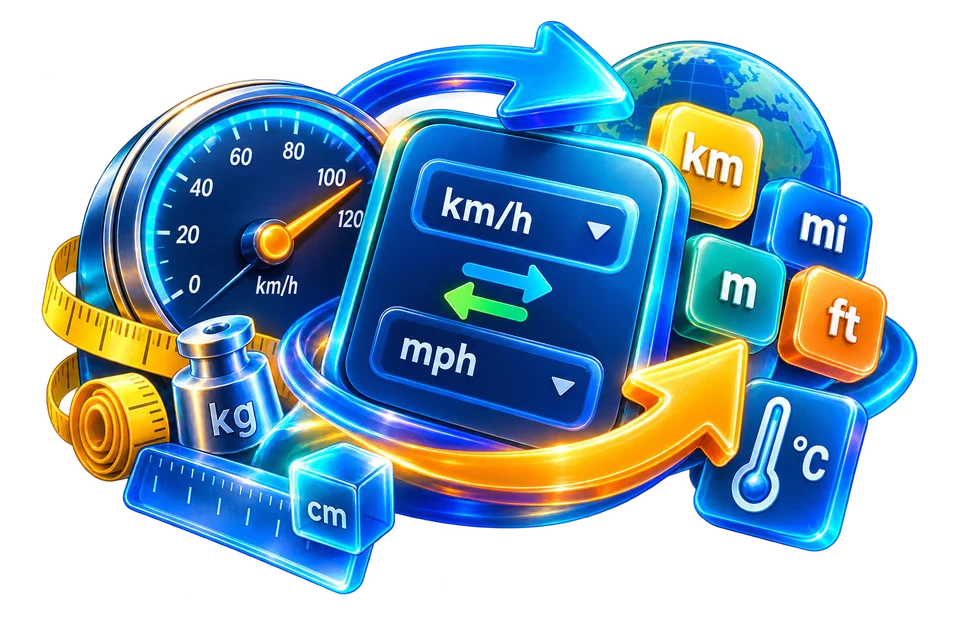

CONVERSION / UTILITIES
Converter Tools
One connected converter covers the common unit families, with FROM and TO side by side and instant swap.
Translate values without losing their units
Practical steps, clear examples and useful limits — so you can choose the right tool and trust what you download.

Unit conversion starts by identifying the measured quantity, not just choosing two labels. Speed, angle, pressure and digital storage follow different rules, and confusing them can produce a convincing but meaningless number.
Choose the right starting point
A numeric value without a unit can be misleading. Confirm the starting unit, destination unit and whether the measurement is absolute or relative.
A practical example
Unit conversions are especially useful for distances, file sizes, speed and pressure. If the source uses ambiguous names, find the precise definition before copying the answer into a form.
What to check before sharing the result
For digital storage, decimal kilobytes and binary kibibytes do not have identical values. For physical measurements, scientific rounding can matter when several conversions happen in a row.
Accuracy, quality and limitations
Write the units beside the result and estimate the direction before accepting it. A length expressed in millimetres should have a larger number than the same length expressed in metres.
Tools for converter workflows
Use Speed Converter for km/h or mph, Pressure Converter for compatible pressure units and Data Size Converter for bytes and larger storage quantities. Never mix a rate of change with an absolute quantity just because their abbreviations look similar.
Pick the next converter task
A download limit given in MB and a file size reported in MiB can appear inconsistent. Compare the unit convention before assuming a transfer failed. For vehicle speed, check whether the original figure was recorded in km/h or knots.
- Universal Converter — Length, weight, temperature, area, volume, data, speed, time, angle and pressure.
Check that the source and target units have the same physical dimension. Where precision matters, keep enough digits for the destination specification and note whether the interface uses decimal or binary storage conventions.
Make the right choice before you begin
A converter is useful when measurements come from different systems, but units must describe the same physical quantity. Distance can be expressed in kilometres or miles; speed adds time and needs kilometres per hour or miles per hour. Data size often uses decimal and binary prefixes, so the label GB should not be casually treated as identical to GiB. Before copying a converted value, confirm the source unit, destination unit and whether the input is exact or measured. For scientific and engineering work, keep enough digits to avoid false precision.
See how the workflow works in practice
Imagine ordering a component based on a specification written in millimetres while your measuring tape shows inches. Convert the complete value and then compare the result against the product tolerance, not just a rounded headline number. Temperature is another familiar example: Celsius to Fahrenheit changes the offset as well as the scale, so it cannot be calculated by a simple multiplication alone. Angle tools need clarity about degrees and radians before a trigonometric calculation. Choosing the right unit family is as important as selecting the correct numerical value.
Check the output before relying on it
Online conversions are good checks, not replacements for understanding measurement uncertainty. A display reading of 2.3 may represent a measurement rounded to one decimal place; changing units does not create more accurate source information. For money, exchange rates change with time and fees, so a static general converter should not be presented as a live bank quote. In a document or message, write the number and unit together, especially when communicating internationally. For repeat workflows, save the unit pair in your notes so the same conversion is applied consistently.
Frequently asked converter questions
Which measurement should I convert?
Use Speed Converter for km/h or mph, Pressure Converter for compatible pressure units and Data Size Converter for bytes and larger storage quantities. Use the specific tool settings described above, and check your actual input and saved output before proceeding.
How do I verify that converted units match?
Check that the source and target units have the same physical dimension. Use the specific tool settings described above, and check your actual input and saved output before proceeding.
Why do data-size units sometimes differ?
Mobile unit selectors can be narrow; review both unit names after conversion. Some browsers preserve the previous selection when you return to a page, so do not rely on a default remaining unchanged.
What if a converted value looks too large?
If the converted value looks extreme, calculate a rough order-of-magnitude estimate independently. Confirm the direction of conversion, distinguish Celsius from Kelvin when appropriate and review the number of significant digits.
How can I catch an incorrect conversion?
Start with a rough order-of-magnitude estimate and check whether the number should increase or decrease. Convert the result back to the original unit when accuracy matters. If two sources disagree, check the conversion standard and the exact unit names.